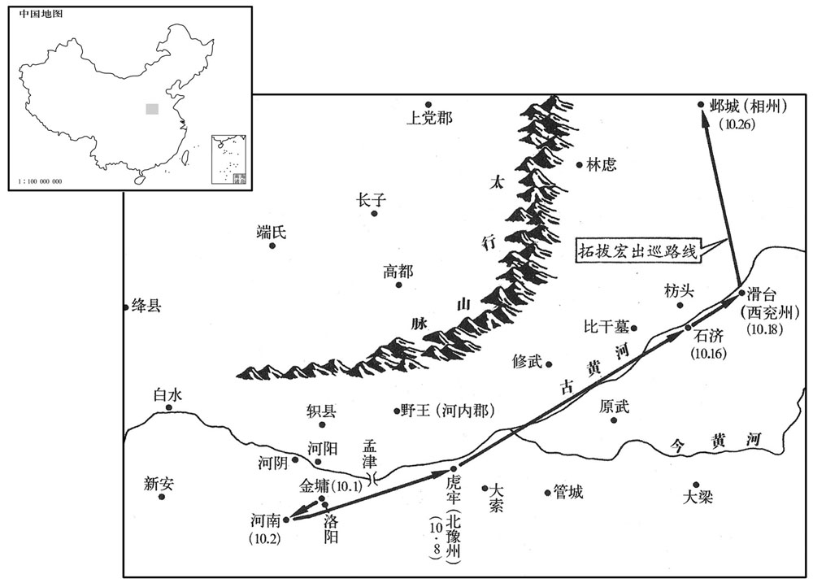
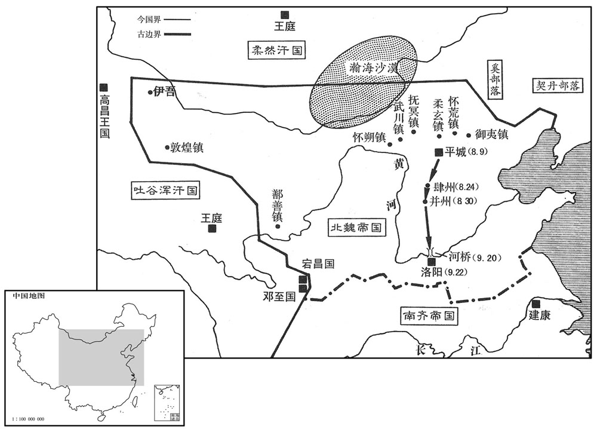

卷次与人物目录 / 卷138
资治通鉴 · 卷第一百三十八【齐纪四】
公元493年至公元493年 · 原文、白话与胡三省注
本页按胡注本编排保存全卷内容。白话采用本站所据译本，未可靠对应的内容另列说明；事件标题用于定位，并非原书文字。
本卷共63段原文，60段有译文对应，3段缺译或待核对。
卷第一百三十八【齐纪四】昭阳作噩（癸酉），一年。
卷首原文与注释
世祖武皇帝下
公元493年 · 齐世祖武皇帝永明十一年
永明十一年〔（癸酉、四九三）〕
上传原文的注释括号有异常，字符原样保留；无法可靠划分的段落默认全文显示。
本年事件索引（现代整理）
- 齐任王敬则为司空、陈显达为江州刺史
- 齐武帝造露车备攻彭城
- 北魏遣邢峦等来聘
- 文惠太子萧长懋卒
- 萧长懋奢侈营建东宫
- 萧长懋令徐文景私造御用车物
- 齐武帝见太子遗物，毁除奢侈器物
- 萧长懋厌恶萧鸾，萧子良为之解说
- 北魏孝文帝始耕籍田
- 王奂杀刘兴祖，齐帝遣军收捕
- 王奂闭城拒命，兵败被杀
- 齐立萧昭业为皇太孙
- 北魏立冯氏为皇后
- 田益宗率光城蛮降魏
- 北魏孝文帝宴四庙子孙
- 北魏孝文帝临朝决疑录囚
- 齐任萧铿为南豫州刺史
- 襄阳蛮雷婆思等求徙降魏
- 北魏孝文帝谋迁都洛阳
- 北魏孝文帝与任城王澄议迁都
- 北魏修河桥并讲武备伐齐
- 法智、周盘龙作乱攻徐州被诛
- 北魏立拓跋恂为太子
- 北魏戒严准备南伐
- 王融自负门才，图为公辅
- 王融劝齐帝北伐，招募骑士
- 齐武帝病重，萧子良入内侍疾
- 齐武帝病危，萧鸾拥立太孙
- 齐武帝遗诏安排辅政诸臣
- 齐武帝勤政有断，永明年间国治
- 郁林王未立时，群臣议立太孙
- 萧鸾受遗诏辅政，萧子良推之
- 郁林王疑忌萧子良并加强防备
- 齐郁林王以遗诏任命群臣
- 北魏山阳公尉元卒
- 北魏孝文帝率军三十万南伐
- 郁林王萧昭业聪慧而与群小亲近
- 南郡王萧昭业纵欲乱政
- 萧昭业侍疾居丧表里不一
- 齐武帝临终嘱萧昭业善理国政
- 郁林王即位后赐死王融
- 王融求交徐勉，魏准因其事获罪
- 北魏孝文帝至肆州赈恤残疾百姓
- 北魏孝文帝赦免军中盗贼
- 司马光论孝文帝赦罪失法
- 北魏刺史王袭虚报政绩被贬
- 北魏遣高聪等来聘
- 北魏补偿车驾损伤民田
- 齐追尊文惠太子为文皇帝
- 齐武帝葬景安陵
- 北魏孝文帝渡河至洛阳观石经
- 北魏孝文帝南伐途中决定迁都洛阳
- 李冲劝孝文帝先返代都经营洛阳
- 孝文帝命于烈留守平城
- 北魏平定支酉、王广民乱
- 北魏孝文帝至金墉城筹建洛都
- 齐尊王太妃为皇太后，立何氏为皇后
- 北魏孝文帝至邺城重用王肃
- 北魏遣拓跋休迎接平城家属
- 齐封萧昭文等为诸王
- 北魏在邺西筑宫迁居
- 江淹劾刘悛、阴智伯贪赃

本年形势与背景参考图
春，正月，以骠骑大将军王敬则为司空，〔骠，匹妙翻。骑，奇寄翻。〕镇军大将军陈显达为江州刺史。显达自以门寒位重，〔陈显达，南彭城人，起于卒伍。〕每迁官，常有愧惧之色，戒其子勿以富贵陵人；而诸子多事豪侈，显达闻之，不悦。〔以陈显达之居宠思畏，终不能自免于猜暴之朝，至于称兵而死，岂非系于所遇之时哉！〕子休尚为郢府主簿，过九江。〔自建康至郢府，先过九江。〕显达曰：「尘尾、蝇拂〔鹿，肿庾翻。尘，麋属；尾能生风，辟蝇菓。陆佃埤雅曰：鹿似尘而鹿而大，其尾辟尘，以置旧帛中，能令岁久红色不黦；又以拂毡，令毡不蠹。名苑曰：尘，群鹿随之，皆视尘所往，尘尾所转为准。于文，主鹿为尘；古之谈者挥焉，良为是也。〕是王、谢家物，汝不须捉此！」〔言不须以风流自标置也。捉，执也。〕即取，于前烧之。
春季，正月，南齐任命骠骑大将军王敬则为司空，任命镇军大将军陈显达为江州刺史。陈显达总认为自己出身寒门，却担任这么显要的官职，所以，每次升官时，他都面带恐惧，表情羞愧，并且告诫他的儿子，不要依仗自己富贵尊荣而欺凌他人。但是，他的儿子们却常常追求豪华奢侈，陈显达听说后，非常不高兴。他的儿子陈休尚担任郢府主簿的官职，途经九江，陈显达说：“麈尾、蝇拂，这些都是王家、谢家那样的人使用的东西，你不需要拿着它。”说完，就把这些东西拿过来，当着儿子的面烧掉了。
初，上于石头造露车三千乘，欲步道取彭城，魏人知之。刘昶数泣诉于魏主，乞处边戍，招集遗民，以雪私耻。〔以萧氏篡宋，夷灭刘氏故也。数，所角翻。处，昌吕翻。〕魏主大会公卿于经武殿，〔魏书帝纪：太和十二年，起经武殿。〕以议南伐，于淮、泗间大积马刍。上闻之，以右卫将军崔慧景为豫州刺史以备之。〔为下魏入寇张本。〕
当初，武帝在石头城制造了三千辆没有篷帐的车辆，打算从陆路攻取彭城。北魏得知了这一情况。刘昶多次在北魏孝文帝面前哭泣、诉说，乞求派他到边界地带戍守，招收仍然怀念刘宋的百姓，向南齐报仇雪耻。孝文帝在经武殿招集文武官员，讨论南伐的事情，并在淮河、泗水之间贮备了很多喂马的草料。武帝听说了这一消息，任命右卫将军崔慧景为豫州刺史，防备北魏的入侵。
魏遣员外散骑侍郎邢峦等来聘。〔散，悉亶翻。骑，奇寄翻。〕峦，颖之孙也。〔颖，曹魏太常邢贞之后，刑颖见一百二十二卷宋文帝元嘉八年。〕
北魏派员外散骑侍郎邢峦等人来访。邢峦是邢颖的孙子。
丙子，文惠太子长懋卒。太子风韵甚和，上晚年好游宴，〔好，呼到翻。〕尚书曹事分送太子省之，由是威加内外。〔省，悉景翻。〕
丙子（二十五日），文惠太子萧长懋去世。萧长懋仪态风韵都很温和，武帝晚年喜欢游乐欢宴，就将尚书各曹的事务交给萧长懋处理，因此，萧长懋威望著称全国。
太子性奢靡，治堂殿、园囿过于上宫，〔治，直之翻。〕费以千万计，恐上望见之，乃傍门列修竹；凡诸服玩，率多僭侈，启于东田起小苑，使东宫将吏更番筑，役，〔将，即亮翻。更，工衡翻。更番，分番更作也。〕营城包巷，弥亘华远。〔言其弰极华丽，而延亘又辽远也。〕上性虽严，多布尔目，太子所为，人莫敢以闻。上尝过太子东田，见其壮丽，大怒，收监作主帅；太子皆藏之，由是大被诮责。〔监工衔翻。帅，所类翻。被，皮义翻。诮，才笑翻。〕
萧长懋生性奢侈豪华，他修建自己的殿堂、花园，远远超过了武帝的宫殿，建筑费用都要以千万计算，他害怕武帝看见，就沿着殿门，种植了一排排修长的竹子。各种服饰、玩物，萧长懋大多都奢侈过分。他请求武帝让他在东田建造一个小规模养禽畜的林苑，让东宫的将士们轮番充当修筑的工匠，营造城墙，围住街巷，伸展辽远，异常华丽。武帝性情虽然严厉，到处都有自己的耳目，但是，太子萧长懋的所作所为，却没有人敢告诉他。一次，武帝曾偶然路过东田，看见那里的建筑非常壮观华丽，于是，勃然大怒，下令逮捕监作主帅。萧长懋听说后，马上把他们全都藏了起来，为此，萧长懋受到严厉斥责。
又使嬖人徐文景造辇及乘舆御物；〔嬖，卑义翻，又博计翻。乘，绳证翻。〕上尝幸东宫，忽忽不暇藏辇，〔忽忽者，急遽之意。〕文景乃以佛像内辇人，故上不疑。文景父陶仁谓文景曰：「我正当扫墓待丧耳！」〔扫墓，谓握除墓地也。〕仍移家避之。后文景竟赐死，陶仁遂不哭。
萧长懋又让自己宠爱的人徐文景制造皇帝专用的辇车和其他专用物件。武帝曾经亲临东宫，萧长懋没来得及将辇车收藏起来，徐文景急中生智，就赶快把一尊佛像放在辇车里，所以，武帝也就没有怀疑。徐文景的父亲徐陶仁曾经对徐文景说：“我现在正在打扫墓地，等待为你办丧事！”徐陶仁将全家搬走，躲开徐文景远远的。后来，徐文景真的被下令自杀，徐陶仁并没有为此而哭泣。
及太子卒，上履行东宫，〔行，下孟翻。〕见其服玩，大怒，敕有司随事毁除。以竟陵王子良与太子善，而不启闻，并责之。
太子萧长懋去世时，武帝有一天步行到了东宫，看见了萧长懋过去的那些奢华的服饰、玩物，极为愤怒，下令有关部门随即全都毁掉。武帝认为，竟陵王萧子良平时和萧长懋关系最好，可他却没有把这些报告给自己，因此，他同时责备了萧子良。太子素恶西昌侯鸾，尝谓子良曰：“我意中殊不喜此人，不解其故，当由其福薄故也。”子良为之救解。及鸾得政，太子子孙无遗焉。
太子萧长懋平时一直讨厌西昌侯萧鸾，他曾经对萧子良说：“我心里特别不喜欢这个人，不知道这是什么缘故，该是他福份浅吧。”萧子良替萧鸾解释辩白。等到后来萧鸾夺取政权后，就将萧长懋的子孙全都杀了，没留一个。
太子素恶西昌侯鸾，尝谓子良曰：「我意中殊不喜此人，不解其故，〔恶，乌路翻。喜，许记翻。解，户买，晓也。〕当由其福薄故也。」子良为之救解。〔为，于伪翻。〕及鸾得政，太子子孙无遗焉。〔西昌侯夷灭太子子孙事见后。按鸾翦除高、武诸子及太子子孙以成篡事，文惠虽不恶之，其子孙亦不能免也。观隆昌、建武时事，君子谓文惠知所恶矣。〕
本段缺少可靠对应白话，原文完整保留；未使用生成译文。
二月，魏主始耕藉田于平城南。〔魏起于北荒，未尝讲古者天子亲耕之礼，今孝文始行之。藉，在亦翻。〕
二月，北魏孝文帝开始在平城城南主持扶犁耕田典礼。
雍州刺史王奂恶宁蛮长史刘兴祖，收系狱，〔雍，于用翻。恶，乌路翻。萧子显齐志，宁蛮府属雍州，别领西新安、义宁、南襄、北建武、蔡阳、永安、安定、怀化、武宁、新阳、义安、高安、左义阳、南襄城、广昌、东襄城、北襄城、怀安、北弘农、西弘农、析阳、北义阳、汉广、中襄城等蛮郡。〔诬其构扇山蛮，欲为乱。敕送兴祖下建康；〔自襄阳顺流东至建康，故曰下。〕奂于狱中杀之，诈云自经。上大怒，遣中书舍人吕文显、直合将军曹道刚将斋仗五百收奂，〔斋仗，斋库精仗以给禁卫勇力之士。将，即亮翻。〕敕镇西司马曹虎从江陵岁道会襄阳。
两版字句有差异，建议核对原文。
雍州刺史王奂讨厌宁蛮长史刘兴祖，将刘兴祖逮捕入狱。诬陷刘兴祖造谣煽动山中蛮族，打算发动叛乱。武帝命令王奂把刘兴祖押送到建康处理，王奂却在狱中害死了刘兴祖，谎称他是上吊自杀。武帝极为愤怒，派中书舍人吕文显和直阁将军曹道刚，率领武装的禁卫军五百人前去雍州逮捕王奂。命令镇西司马曹虎从江陵出发，由陆路北上，与吕文显和曹道刚率领的军队在襄阳会师。
奂子彪，素凶险，奂不能制。长史殷叡，奂之伲也，谓奂曰：「曹、吕来，既不见真敕，恐为奸变，正宜录取，〔录，收也，摄也。〕驰启闻耳。」奂纳之。〔考异曰：南史：「奂子彪议闭门拒命。叡谏曰：『今开门白服接台使，不过隳官免爵耳。』彪坚执不同。叡又请遣典签间道送启，奂从之。典签出城，为文显所执。叡曰：『忠不背国，勇不逃死。』劝奂仰药。叡与彪同诛。」今从齐书。〕彪辄发州兵千余人，开库配甲仗，出南堂，陈兵，闭门拒守。奂门生郑羽叩头启奂，乞出城迎台使，〔使，疏吏翻。〕奂曰：「我不作贼，欲先遣启自申；正恐曹、吕等小人相陵藉，〔陵者侮之而出其上；藉者，蹈之使荐于下。藉，慈夜翻。〕故且闭门自守耳。」彪遂出，与虎军战，兵败，走归。三月，乙亥，司马黄瑶起、宁蛮长史河东裴叔业于城内起兵，攻奂，斩之，〔为后奂子肃食瑶起之肉张本。执彪及弟爽、弼、殷叡，怭伏诛。彪兄融、琛死于建康，琛弟秘书丞肃独得脱，奔魏。〔为王肃屡引魏兵入寇张本。琛，丑林翻。考异曰：南史：「奂弟份自拘请罪，帝宥之。肃屡引魏入至边，帝谓份曰：『比有北信不﹖』份曰：『肃近忘坟柏，宁远忆有臣！』按奂以三月死，帝以七月殂，是冬，肃始见魏主于邺。南史误也。齐无此语。〕
两版字句有差异，建议核对原文。
王奂的儿子王彪，平日凶狠险诈，连王奂都管不了。长史殷睿是王奂的女婿，他对王奂说：“曹道刚和吕文显来到这里，我们没有看到皇帝真正的诏书，恐怕这是什么阴谋诡计，我们正好逮捕他们，然后，再骑马去建康向皇上报告。”王奂接受了殷睿的建议。于是，王彪就派出一千多名雍州州府内的将士，打开武器库，给每人发放一套铠甲兵器，然后，走出南堂，分配兵力，关闭城门死守雍州城。王奂的学生郑羽，向王奂叩头，请求王奂到城外迎接朝廷派来的官员，王奂说：“我并没有叛乱，打算预先派人去建康向皇上申诉。正是害怕遭到曹道刚和吕文显等一些奸诈小人的欺凌侮辱、随意践踏，因此，暂时关闭城门，自我防守罢了。”王彪于是走出城门，和曹虎率领的军队作战，结果被打败，逃回城里。三月，乙亥（二十五日），司马黄瑶起和宁蛮长史河东人裴叔业在雍州城内发动兵变，进攻王奂，并斩杀了他，逮捕了王彪及王彪的弟弟王爽、王弼和殷睿，全部斩首。王彪的哥哥王融、王琛在建康被处死，只有王琛的弟弟、秘书丞王肃得以逃脱，投奔了北魏。
夏，四月，甲午，立南郡王昭业为皇太孙，东宫文武悉改为太孙官属，〔东宫官属，文则太传、少传、詹事、率更令、家令、仆、门大夫、中庶子、中舍人、庶子、浩马、舍人，武则左右卫率、翊军．步兵．屯骑三校尉、旅贲中郎将、左右积弩将军、殿中将军、员外殿中将军、常从虎贲督。〕以太子妃邪王氏为皇太孙太妃，南郡王妃何奼为皇太孙妃。妃，戢之女也。〔何戢见一百三十五卷高帝建元二年。戢，则立翻，又疾立翻。〕
夏季，四月，甲午（十四日），武帝立南郡王萧昭业为皇太孙，太子宫内的文武官属，全都改为太孙的官属。武帝又封太子妃琅邪人王氏为皇太孙太妃，南郡王妃何婧英为皇太孙妃。何婧英是何戢的女儿。
魏太尉丕等请建中宫，戊戌，立皇冯氏。后，熙之女也。〔为后冯后以谗废张本。〕魏主以白虎通云：〔汉章帝集诸儒于白虎观，义五经同异，作白虎通。〕「王者不臣妻之父母」，下诏令太师上书不称臣，入朝不拜，〔朝，直遥翻。〕熙固辞。
北魏太尉拓跋丕等人，请求孝文帝正式册封皇后。戊戌（十八日），册封冯清为皇后。冯皇后是冯熙的女儿。孝文帝根据《白虎通》上说：“君王不可以把妻子的父母作为臣属”，下诏命令太师冯熙呈递奏章时，不再称臣，进入朝廷不用叩拜，但冯熙对此坚决辞谢。
光城蛮帅征虏将军田益宗师部落四千余户叛，降于魏。〔沈约曰：光城郡，疑大明中分弋阳所立五代史志曰：光州光山县，旧置光城郡。蛮帅，所类翻，宗帅，读曰率。降，户江翻。〕
光城蛮人首领、征虏将军田益宗率领自己部落四千多户人家反叛，向北魏投降。
五月，壬戌，魏主宴四庙子孙于宣文堂，亲与之齿，用家人礼。〔四庙子孙，谓世祖、恭宗、高宗、显祖之子孙也。太和十二年起宣文堂、经武殿。用家人礼者，略君臣之敬而序长幼之齿。〕
五月，壬戌（十三日），北魏孝文帝在宣文堂摆设酒席，宴请太武帝以下四代皇帝的子孙，亲自和他们在一起谈年龄，论辈份，用对待家里人的礼节对待他们。
甲子，魏主临朝堂，〔朝，直遥翻。〕引公卿以下决疑政，录囚徒。帝谓司空穆亮曰：「自今朝廷政事，日中以前，卿等先自论议；日中以后，朕与卿等共决之。」
甲子（十五日），孝文帝来到金銮殿，接见公卿以下官员，裁决政务上姷囊赡盐侍猓蟛榧窃厍舴傅陌妇怼Ｐ⑽牡鄱运究漳铝了担骸按酉衷诳迹院蟪廷上的政务，在中午以前，由你们自己先商量讨论，中午过后，朕和你们一块儿讨论裁决。”
丙子，以宜都王铿为南豫州刺史。〔铿，上耕翻。〕先是庐陵王子卿为南豫州刺史，〔先，悉荐翻。〕之镇，道中戏部伍为水军，上闻之，大怒，杀其典签；以铿代之。子卿还风，上终身不与相见。
丙子（二十七日），南齐任命宜都王萧铿为南豫州刺史。在这之前，曾任命庐陵王萧子卿为南豫州刺史，但萧子卿在前往任所的途中，把自己率领的军队假扮成水军模样取乐，武帝听说后，极为愤怒，下令杀了萧子卿的典签，又另派萧铿前往南豫接替萧子卿。萧子卿返回自己的家里，武帝直到去世，也不和他相见。
襄阳蛮酋雷婆思等帅户千余求内徙于魏，魏人处之沔北。〔是时沔北之地犹为齐境。雷婆思等盖居沔南，徙处沔北，则稍近魏境耳。酋，慈由翻。帅，读曰率。处，昌吕翻。〕
襄阳蛮酋长雷婆思等人，率领一千多户居民向北魏投降，请求迁移到北魏境内居住，北魏把他们安置在沔水以北。
魏主以平城地寒，六月雨雪，〔极阴之地，盛夏雨雪。雨，王遇翻；自上而下曰雨。〕风沙常起，〔风沙，大风扬沙也。将迁都洛阳；恐群臣不从，乃议大举伐齐，欲以胁众。斋于明堂左，〔郑玄曰：明堂左大寝南堂东偏也。，古贺翻。〕使太常卿王谌筮之，遇革，帝曰：「『汤、武革命，应乎天而顺乎人。』〔此革卦之彖辞也。谌，氏壬翻。〕吉孰大焉！」群臣莫敢言。尚书任城王澄曰：「陛下奕叶重光，帝大中土；〔任，音壬，重，宜龙翻。〕今出师以征未服，而得汤、武革命之象，未为全吉也。」帝厉声曰：「繇云：『社稷虽为陛下之有，臣为社稷之臣，安可知危而不言！」帝久之乃解，曰：「各言其志，夫亦何伤！」
两版字句有差异，建议核对原文。
魏孝文帝因为平城气候寒冷，夏季六月时还在下雪，而且经常狂风大作，飞沙漫天，所以，准备把京都迁到洛阳。但他又担心文武官员们不同意，于是，提议大规模进攻南齐，打算以这种名义胁迫大家。在明堂南厢东边的偏殿斋戒之后，让太常卿王谌占卜，得到“革卦”，孝文帝说：“‘商汤王和周武王进行变革，是适应上天之命，顺应百姓之心的。’没有比这更吉祥的了。”文武官员没有人敢说什么。尚书、任城王拓跋澄说：“陛下继承几代累积下来的大业，并使之发扬光大，拥有了中原土地，而如今却要讨伐还没有臣服的对象，在这时得到了商汤王和周武王变革的象辞，恐怕这并不全是吉利。”孝文帝立刻严厉地说：“繇辞说：‘大人物实施老虎一样的变革’，你为什么要说这不吉利呢？”拓跋澄说：“陛下作为飞龙兴起已经很久了，怎么到今天又实施如同老虎一样的变革？”孝文帝立刻发怒说：“国家，是我的国家，任城王打算要阻止大家吗？”拓跋澄说：“国家虽然是陛下所有，而我是国家的臣属，怎么可以明知危险而不说出来呢？”孝文帝过了很长时间才缓和了气色，说：“每个人都该说出自己的看法，这又有什么关系！”

既还宫，〔自明堂左还宫。〕召澄入见，逆谓之曰：「向者革卦，今当更与卿论之。明堂之忿，恐人人竞言，沮我大计，故以声色怖文武耳。相识朕意。」〔见，贤遍翻。沮，在吕翻。怖，普布翻。〕此乃用武之地，非可文治。今将移风俗，其道诚难，朕欲因此迁宅中原，卿以为何如﹖」〔魏主始与任城王澄言其情。〕澄曰：「陛下欲卜宅中土以经略四海，此周、汉所以兴隆也。」〔比之周成、康，汉光、明也。〕帝曰：「北人习常恋故，必将惊扰，柰何﹖」〔后穆泰等之谋，卒如帝所虑。〕澄曰：「非常房也！」〕张良赞汉高帝迁都长安，故以为比。〕
两版字句有差异，建议核对原文。
孝文帝回到皇官，立刻召见拓跋澄，劈头就说：“刚才关于‘革卦’的事，现在要进一步和你讨论一下。在明堂上，我之所以大发脾气，是因为害怕大家争先恐后地发言，破坏了我一个大的决策，所以，我就声色俱厉，以此吓唬那些文武官员罢了。我想，你会了解朕的用心。”于是命令左右侍从退下，对拓跋澄说：“今天我所要做的这件事，确实是很不容易的。我们国家是在北方疆土上建立起来的，后来又迁都到平城。但是，平城只是用武力开疆拓土的地方，而不宜进行治理教化。现在，我打算进行改变风俗习惯的重大变革，这条路走起来确实困难，朕只是想利用大军南下征伐的声势，将京都迁到中原，你认为怎么样？”拓跋澄说：“陛下您打算把京都迁到中原，用以扩大疆土，征服四海，这一想法也正是以前周王朝和汉王朝兴盛不衰的原因。”孝文帝说：“北方人习惯留恋于旧有的生活方式，那时，他们一定会惊恐骚动起来，怎么办？”拓跋澄回答说：“不平凡的事，原来就不是平凡的人所能做得了的。陛下的决断，是出自您圣明的内心，他们又能有什么办法呢？”孝文帝高兴地说：“任城王真是我的张子房呀！”
六月，丙戌，命作河桥，欲以济师。秘书监卢渊上表，以为：「前代承平之主，未尝亲御六军，决胜行陈之间；〔行，户刚翻。陈，读曰阵。〕岂非胜之不足为武，不胜有亏威望乎！昔魏武以弊卒一万破袁绍，〔事见六十二卷汉献帝建安五年。〔谢玄以步兵三千摧苻秦、〔事见一百五卷晋孝武帝太元八年。〕胜负之变，决于须臾，不在众寡也。」诏报曰：「承平之主，所以不亲戎事，或以同轨无敌，或似懦劣偷安。今谓之同轨则未然，〔天下混一，则车同轨，书同文。〕比之懦劣则可耻，必若王者不当亲戎，则先王制，革客，何所施也﹖〔周制五辂，革辂，龙勒条，缨五就，建大白以即戎。郑氏注：革辂，鞔之以革而漆之，无他饰。条，读为条。〕魏武之胜，盖由仗顺；苻氏之败，亦由失政；〔岂寡必能胜众，弱必能制强邪！」丁未，魏主讲武，命尚书李冲典武选。〔时欲用兵，命冲典武选，铨择才勇之士。选，须绢翻。〕
两版字句有差异，建议核对原文。
六月，丙戌（初七），北魏孝文帝下令在黄河上修筑大桥，准备让南下大军由桥上渡过黄河。秘书监卢渊上书，认为：“以前太平时代的君主，从来没有过亲自统率大规模军队作战，在双方交战阵地上决一胜负的，还不是因为胜利了并不足以显示勇敢，而失败了则会使自己的威望受到损失吗？以前，曹操统率一万名疲惫不堪的士卒打败了袁绍，谢玄率领三千名步兵，摧毁了苻坚的大军，胜利与失败的变化，决定于转眼的工夫，而不在于人数多少。”孝文帝下诏回答说：“太平时代的君主，之所以不亲自统率军队作战，有的是因为天下已经统一，不再存在敌人；有的是因为懦弱卑怯，苟且偷安。现在说是天下已经统一、太平，实际上并不是这样；与懦弱卑劣的人相比，又是十分可耻的。如果太平时期的君主一定不应该亲自统率军队作战，那么，古代的君王特别制造的战斗时使用的革车，又会有什么用呢？曹操之所以能取得胜利，是因为他依仗名正言顺。苻坚之所以失败了，其根源也是由于他失德无道。怎么能是人数少就一定能战胜人数多，力量弱就一定能战胜力量强的呢？”丁未（二十八日），孝文帝讲论武事，命令尚书李冲负责选拔将官。
建康僧法智与徐州民周盘龙等作乱，〔此又一周盘龙，非周奉叔之父。〕夜，攻徐州城，入之；刺史王玄邈讨诛之。〔徐州城即锺离城。〕
南齐建康僧侣法智和徐州平民周盘龙等人一起发动叛乱，乘夜进攻徐州城，突入城中。徐州刺史王玄邈率军前来讨伐，杀了法智和周盘龙。
秋，七月，癸丑，魏立皇子恂为太子。〔为魏主后废恂张本。〕
秋季，七月，癸丑（初五），孝文帝立皇子拓跋恂为太子。
戊子，〔【严：「子」改「午」。】〕魏中外戒严，发灵布及移书，称当南伐。〔用兵尚神密。魏主今露其事以布告四方，故亦日露布；移书，则移书于齐境也。〕诏发扬、徐州民丁，广设召募以备之。
戊子（初十），北魏实行戒严管制，发表正式文告，并将文告转交各地，宣称要南伐。齐武帝立刻下诏，发动扬州、徐州男子入伍，同时在各地大肆征兵买马，用以防备北魏大军的入侵。
中书郎王融，自恃人地，〔王融有俊才，故以人身自高；且王弘曾孙，故以门地自高。〕三十内望为公辅。尝夜直省中，抚案叹曰：「为尔寂寂，〔尔，如此也。寂寂，言冷寞也。〕邓禹笑人！」〔邓禹年二十四为汉司徒，融年巳过之，故云然。〕行逢朱雀桁开，喧湫不得进，〔朱雀桁当建康朱雀门，跨秦淮南北岸以渡行人，大路所由也。桁开则行者填咽。湫，子小翻，隘也。经典释文曰：湫，徐音秋，又在酒翻。〕搥车壁叹曰：「车前无八驺，何得称丈夫！」〔搥，传追翻。车前有油壁。自晋以来，诸公、诸从公交车前给驺八人。驺，侧鸠翻。〕竟陵王子良爱其文学，特亲厚之。
中书郎王融依仗自己才能和门第，不到三十岁就打算作公辅。他有一次在宫中值夜，自己手抚桌子，叹息说：“竟然孤寂到如此地步，被邓禹所耻笑啊！”有一次，他路过朱雀桥，正赶上朱雀桥打开浮桥，行人车马不能前进，喧闹拥挤，王融就用手捶打车厢，叹息说：“车前没有八个骑兵开道，怎么能称得上是大丈夫！”竟陵王萧子良喜爱王融的文才，所以，对他特别优厚亲热。
融见上有北伐之志，数上书奖劝，〔奖者，推助以成其事。数所角翻。〕因大习骑射。骑，奇寄翻。〕及魏将入寇，子良于东府募兵，版融宁朔将将，〔宋泰始初，南攻义嘉，军功者众，版不能供，始用黄纸。今版授融，盖重于黄纸也。或曰：未经敕用者谓之版授。〕使典其事。融倾意招纳，得江西伧楚数百人，并有干用。〔伧，助庚翻。〕
王融发现武帝有北上征伐的意思，于是，他多次上书，鼓动催促，并因此努力学习骑马射箭。北魏大军即将前来进犯时，萧子良就在东府开始招兵买兵，任命王融为宁朔将军，让他主持这件事。王融尽力去招收人马，招集了几百名长江以西古楚国地区的武人，他们每个人都很有才干，可以担当重任。
会上不豫，诏子良甲仗人延昌殿侍医药；子良以萧衍、范云等皆为帐内军主。戊辰，遣江州刺史陈显达镇樊城。上虑朝野忧遑，〔遑，急也，遽也。〕力疾召乐府奏正声伎。〔江左以清商为正声伎。伎，渠绮翻。〕子良日夜在内，太孙间日参承。〔间曰，隔一日也。间，古苋翻。参，候也。承，奉也。〕
正赶上武帝身体不舒服，他命令萧子良全副武装去延昌殿，为他服侍医药。萧子良就任命萧衍、范云等人都担任帐内军主。戊辰（二十日），派江州刺史陈显达镇守樊城。武帝恐怕他的病情会引起朝廷内和民间的担忧恐惧，所以，又强挺着，征召皇家乐队进宫演奏正统雅乐。萧子良日日夜夜守在禁宫，皇太孙萧昭业每隔一天就要进来问安、侍奉。
戊寅，上疾亟蹔绝；〔气暂绝而不息也。〕太孙未入，内外惶惧，百僚皆已服。王融欲矫诏立子良，诏草已立。萧衍谓范云曰：「道路籍籍，皆云将有非常之举。王元长非济世才，〔王融，字符长。〕视其败也。」云曰：「忧国家者，惟有王中书耳。」衍曰：「忧国，欲为周、召邪，欲为竖刁邪﹖」〔召，读曰邵。按左氏传：齐桓公既立子昭为太子。易牙有宠于卫姬。卫姬生无亏。易牙因竖刁以荐羞于桓公，遂有宠，公许之立无亏。公卒，易牙入，与竖刁杀群吏翻立无亏。昭奔宋。宋襄公伐齐，杀无亏而立昭，是为孝公。〕云不敢答。及太孙来，王融什服绛衫，于中书省合口断东宫仗不得进。〔断，音短。〕顷之，上复苏，〔复，扶又翻。〕问太孙所在，因召东宫器甲皆入，以朝事委尚书左仆射西昌侯鸾。〔朝，直遥翻。〕俄而上殂，〔年五十四。〕融处分以子良兵禁诸门。〔处，昌吕翻。分，扶问翻。〕鸾闻之，急驰至云龙门，不得进，鸾曰：「有敕召我！」排之而入，奉太孙登殿，命左右扶出子良；指麾部署，音响如锺，殿中无不从命。融知不遂释还省，〔释戎服还中书省也。〕叹曰：「公误我！」由是郁林王深怨之。〔太孙即位，寻见废，弒史以追废庂号书之。为后杀王融张本。〕
两版字句有差异，建议核对原文。
戊寅（三十日），武帝病势加重，一时气闷晕倒。这时皇太孙萧昭业还没有入宫，宫内宫外人人惶恐不安，文武百官也都穿上了丧服。王融打算假传圣旨，命萧子良继承王位，他已将诏书草稿写好。萧衍对范云说：“民间已是议论纷纷，都说宫内可能要发生不一般的情况。王融并不是治理国家的人才，他眼看着就要出事了。”范云说：“忧国忧民的人，也只有王融一 人了 。”萧衍说：“忧国忧民，是想要当周公、召公呢，还是想当齐桓公死后的竖刁呢？”范云不敢回答。等到萧昭业入宫，王融已是全副武装，穿着红色战服，站在中书省厅前要道，截住东宫卫队不让他们进入。过了一会儿，武帝醒转过来，问皇太孙萧昭业在哪里，于是召东宫卫队全部入宫，武帝把国家大事全部托付给了尚书左仆射、西昌侯萧鸾。不一会儿，武帝就去世了。王融采取紧急措施，命令萧子良的军队接管宫城各门。萧鸾得到消息后，立刻上马飞奔到云龙门，但被守在那里的卫士挡住，不让他进去，萧鸾说：“皇上有诏令，让我晋见。”接着，他推开卫士，直接闯了进去，马上拥戴皇太孙萧昭业登基即位，命令左右侍从把萧子良搀扶出金銮殿。萧鸾指挥和安排警卫戒备，声音洪亮如钟，殿内所有的官员侍从，没有一个不听他的命令的。王融知道自己的计划不能实现，也就只好脱下战服，返回中书省，叹息着说：“萧子良耽误了我。”从此以后，萧昭业对王融深为怨恨。
遣诏曰：「太孙进德日茂，社稷有寄。子良善相毗辅，思弘治道，〔治，直吏翻。〕内外众事无大小悉与鸾参怀，共下意！〔参，豫也。怀，思也。命鸾参豫其事，而详思其可否也。共下意者，令降心相从，以济国事也。〕尚书中事，职务根本，悉委右仆射王晏、吏部尚书徐孝嗣；军旅之略，委王敬则、陈显达、王广之、王玄邈、沈文季、张緕、薛渊等。」〔自此以上，皆遗诏之辞。緕，古回翻。〕
武帝遗诏说：“皇太孙的品德一天比一天高尚，国家也就有所寄托了。萧子良要努力尽心辅佐皇太孙，考虑如何治理国家的大计，对于朝廷内外各种事情，无论是大是小，都要和萧鸾一起商量裁决，一起提出意见。尚书省的事务，是政务的根本；将它全都交给右仆射王晏、吏部尚书徐孝嗣处理。军事方面的大计，委托给王敬则、陈显达、王广之、王玄邈、沈文季、张、薛渊等人。”
世祖留心政事，务总大体，严明有断，郡县久于其职，长吏犯法，封刃行诛。故永明之世，百姓丰乐，贼盗屏息。然颇好游宴，华，靡之事，常言恨之，未能顿遣。〔遣，袪也，逐也。言未能袪逐游宴之失也。自此以上，史述帝平生之大略。断，丁乱翻。长，知两翻。乐，音洛。屏，必郢翻。好，呼到翻。〕
武帝在世时，对国家政治事务十分用心，总揽全局，严明果断，郡守县令都能长期任职，地方长官触犯法令，就封缄钢刀，派人执行诛杀。所以，在南齐永明时代，老百姓生活富足，祥和安乐，盗贼不敢横行。不过，武帝非常喜欢游乐饮宴，虽然对于奢华靡烂的生活，他经常说很痛恨，但是他自己也并没能避免。
郁林王之未立也，众皆疑立子良，口语喧腾。武陵王晔于众中大言曰：「若立长，则应在我；〔世祖诸弟，存者晔为长。长，知两翻。〕立嫡，则应在太孙。」〔郁林王，讳昭业，字符尚，小字法身，文惠太子长子也，以世嫡立为皇太孙。〕由是帝深凭赖之。〔太孙已即位，故书帝。〕直合周奉叔、曹道刚素为帝心膂，并使监殿中直卫；少日，复以道刚为黄门郎。〔监，古衔翻。少，诗沼翻。复，扶又翻。为西昌侯鸾欲弒先除周奉叔、曹道刚张本。〕
郁林王萧昭业还没有登基即位时，大家都怀疑可能要册立萧子良，一时之间，传言很多。武陵王萧晔曾经在大庭广众之下大声说：“如果选择辈分高的继承王位，就应该是我；如果选择嫡系继承王位，那么，就应该是皇太孙。”为此，萧昭业对萧晔深加信赖。直将军周奉叔和曹道刚二人，平时就是萧昭业的心腹，于是，命令二人同时主管殿中值班宿卫。过了几天，又任命曹道刚为黄门郎。
初，西昌侯鸾为太祖所爱，〔事见一百三十五卷高帝建元二年。〕鸾性俭素，车服仪从，同于素士，所居官名为严能，故世祖亦重之。〔鸾初为安吉令，有严能之名。王子侯旧乘缠帷车，仪从如素士。从，才用翻。〕世祖遗诏，使竟陵王子良辅政，鸾知尚书事。子良素仁厚，不乐世务，〔桨，音洛。〕乃更推鸾，故遗诏云「事无木小，悉与鸾参怀」，子良之志也。〔史言子良无夺适之志。〕
当初，西昌侯萧鸾深受文帝的宏爱，萧鸾生性节俭朴素，他所乘坐的车马、所穿的衣服，以及他的仪仗随从，和平常人家一样。他对所担任的官崐职都能胜任，号称严厉能干，所以，武帝对他也很重视。武帝留下遗诏让竟陵王萧子良辅政，萧鸾做知尚书事。萧子良平素仁义宽厚，不喜欢处理朝廷各种各样的事务，于是，就特别推荐萧鸾。所以遗诏上说“朝廷内外各种事情，无论是大是小，都要和萧鸾一起商讨决定”，这是萧子良的主张。
帝少养于子良纪袁氏，〔少，诗照翻。〕慈爱甚着。及王融有谋，〔史言夺适之谋出于王融。〕遂深忌子良。太行出太极殿，子良居中书省，帝使虎贲中郎将潘敞领二人仗屯太极殿西阶以防之。〔中书省盖在太极殿西，故使屯于西阶以防子良。贲，音奔。将，即亮翻。〕既成，服，诸王皆出，子乞停至山陵，不许。〔乞停中书省，俟梓宫出葬而后也。〕
萧昭业从小是由萧子良的妃子袁氏抚养大的，袁氏对他非常慈爱关心。王融阴谋立萧子良以后，萧昭业对萧子良也就深为忌恨起来。武帝的遗体移到太极殿时，萧子良住在中书省，于是，萧昭业就派虎贲中郎将潘敞率领二百名士卒驻守在太极殿西阶，严防不测。等到武帝的遗体装入棺木，各位亲王都走出宫中后，萧子良请求能允许他在这儿等到下葬那天再离开，未被应允。
壬午，称遗诏，以武陵王晔为卫将军，与征南大将军陈显达并开府仪同三司；尚书左仆射、西昌侯鸾为尚书令；太孙詹事沈文季为护军。〔史言遗诏本无此段除授，当时称遗诏行之。〕癸未，以竟陵王子良为太傅；蠲除三调柔众逋，〔三调、谓调粟、调帛及杂调也。逋，久负也。〕省御府及无用池田、邸治，〔「治」据萧子显齐书当作「冶」，谓冶铸之所也。〕减关市征税。先是蠲原之诏，多无事实，浚责如故。〔所谓「黄放白催」也。先，悉荐翻。〕是时西昌侯鸾知政，恩信两行，众皆悦之。〔史为西昌侯鸾篡国张本。〕
壬午（初四），萧昭业声称奉武帝的遗诏，任命武陵王萧晔为卫将军，和征南大将军陈显达一同为开府仪同三司，尚书左仆射、西昌侯萧鸾为尚书令，太孙詹事沈文季为护军。癸未（初五），又任命竟陵王萧子良为太傅。下令免除三种征调，对老百姓以前所欠的赋税也一律免除。减省皇室各府、署和不使用的田庄、水池、宅第、冶炼铸造场，减少关卡税收。在这以前，虽然也有免除赋税的诏令，但它也不过是一纸空文，朝廷大多没有真正实施，还像以前一样严加征收。现在，西昌侯萧鸾当权执政，他恩德和信用一同实施，所以，老百姓都非常高兴。
魏山阳景桓公尉元卒。〔尉，纡勿翻。〕
两版字句有差异，建议核对原文。
北魏山阳景桓公尉元去世。
魏主使录尚书事广陵王羽持节安抚六镇，发其突骑。〔骑奇寄翻；下同。〕丁亥，魏主辞永固陵；己丑发平城，南伐，步骑三十余万；使太尉丕与广陵王羽翻守平城，并君使持节。〔晋制，使持节得杀二千石以下。杜佑曰：留守，周之君陈似其任也，此后无闻。汉和帝南巡，祠园庙，张禹以太尉兼卫留守。晋惠帝幸长安，仆射荀藩等与遣官在洛者为留台，承制行事。其后安帝播迁，刘裕亦置留台。后魏孝文帝南伐，以太尉丕、广陵王羽留守京师，留守之制因此。〕羽曰：「太尉宜专节度，臣正可为副。」魏主曰：「老者之智，少者之决，〔言老者经事多，故智虑深远；少者气盛，故临事有断。少，读诏翻。〕汝无辞也。」以河南王干为车骑大将军、都督关右诸军事，又以司空穆亮、安南将军卢渊、平南将军薛胤皆为干副，众合七万出子午谷。〔欲攻梁、益也。〕胤，辩之曾孙也。〔薛辩见一百一十八卷晋安帝义熙十三年。〕
孝文帝派录尚书事、广陵王拓跋羽，手持皇帝的符节前去安抚六镇，并征调六镇的突击骑兵。丁亥（初九），孝文帝叩别永固陵。已丑（十一日），孝文帝亲自率领三十多万步、骑兵，从平城出发，大规模向南征伐。命令太尉拓跋丕和广陵王拓跋羽留在平城镇守，并加授使持节。拓跋羽说：“太尉最好全权负责管理，臣可以做他的副手。”孝文帝说：“年纪大的人有经验，能深谋远虑，年纪轻的人有气魄，遇事坚决果断，所以，你不要推辞了。”任命河南王拓跋干为车骑大将军、都督关右诸军事，司空穆亮、安南将军卢渊、平南将军薛胤三人都担任拓跋干的副手，率领各路人马共七万人，从子午谷南下。薛胤是薛辩的曾孙。
郁林王性辩慧，美容止，善应对，哀乐过人；〔乐，音洛。〕世祖由是爱之。而矫情佣诈，阴怀鄙慝，与左右群小共衣食，同卧起。
南齐郁林王生性聪明，反应迅速，容貌清秀，举止高雅，善于应对，无论是悲哀还是欢乐，都比别人强烈。因此，武帝很宠受他。但是，他善于伪装矫饰，表面善良，内心却是阴狠卑鄙，他跟左右一些恶劣的小人混在一起，衣食不分，就连睡觉也挤在一块儿。
始为南郡王，从竟陵王子良在西州，文惠太子每禁其起居，节其用度。王密就富人求钱，无敢不与。别作钥钩，夜开西州后阁，与左右至诸营署中淫宴。师史仁祖、侍书胡天翼相谓曰：“若言之二宫，则其事未易；若于营署为异人所殴及犬物所伤，岂直罪止一身，亦当尽室及祸。年各七十，馀生岂足吝邪！”数日间，二人相继自杀，二宫不知也。所爱左右，皆逆加官爵，疏于黄纸，使囊盛带之，许南面之日，依此施行。萧昭业担任南郡王时，跟随叔父、竟陵王萧子良一起住在西州。文惠太子萧子懋经常管束他的生活起居，限制他的花销费用。他就偷偷向富有人家要钱，没有人敢不给他。自己还另外制造了一把钥匙，夜里私自打开西州州府后门，和左右侍从一起到各个军营去荒淫欢宴。他的老师史仁祖和侍书胡天翼商议说：“如果我们把这件事报告给皇上或皇太子，事情就不会那么容易解决了。如果在军营中被别人打了，或者被狗什么的咬伤了，岂只是我们本身要获罪，我们全家都要被牵连进去。我们俩都年已七十，哪里还吝惜自己以后的岁月！”于是，几天之内，史仁祖和胡天翼都先后自杀，但武帝和太子却不知道。萧昭业对他所宠爱的左右侍从，都预先封爵任官，写在黄纸上，让这些人装在口袋里，随身携带，答应在他登基即位的时候，就照此执行。
始为南郡王，从竟陵王子良在西州，〔帝少养于子良纪袁氏，子良为扬州刺史，故帝从在西州。〕文惠太子每禁其起居，节其用度。王密就富人求钱，无敢不与。别作钥钩，〔钩，所以启钥，今谓之钥匙。〕夜开西州后合，与左右至诸营置中淫宴。师史仁祖、侍书胡天翼〔王国有师掌导之教训，侍书掌教之书翰。〕相谓曰：「若言之二宫，〔二宫，谓上宫及东宫也。〕则其事未易；〔易，以豉翻。〕若于营署为异人所殴〔殴，乌口翻。〕及犬物所伤，岂直置止一身，亦当尽室及祸。年各七十，余生岂足吝邪！」数日间，二人相继自杀，二宫不知也。〔人莫知其子之恶，其斯之谓欤。〕所爱左右，皆逆加官爵，疏于黄纸，使囊盛带之，〔盛，时征翻。〕许南面之日，依此施行。
本段缺少可靠对应白话，原文完整保留；未使用生成译文。
侍太子疾及居丧，忧容号毁，〔号，户刀翻。〕见者呜咽；裁还和室，即欢笑酣饮。常令女巫杨氏祷祀，速求天位。及太子卒，〔文惠太子卒于是年正月。〕谓由杨氏之力，倍加敬信。既为太孙，〔是年夏四月，自南郡王为太孙。〕世祖有疾，又令杨氏祷祀。时何妃犹在西州，〔太孙居东宫，何妃尚留西州。〕世祖疾稍危，太孙与何妃书，纸中央作一大喜字，而作三十六小嘉字绕之。
萧昭业在侍奉太子养病及后来守丧期间，面带忧愁，悲泣哀号，甚至毁坏了身体，看见他的人也都被他的行为感动得哭泣起来。可是，一返回自己家里，就立刻笑逐颜开，大吃大喝起来。他经常命令女巫杨氏替他向上天祈祷，祈祷祖父和父亲快点死去。太子去世时，萧昭业认为是借杨氏巫祝的力量的结果，于是，更加敬重信任杨氏。等到被封为皇太孙以后，武帝有病，他又命令杨氏向上天祈祷。此时，他的正室何婧英还留在西州，武帝的病开始严重时，太孙给何婧英写信，就在信纸中间写了一个大喜字，又围绕着大喜字，在旁边写了三十六个小喜字。
侍世祖疾，言发泪下。世祖以为必为负荷大业，〔荷，下可翻，又读如字。〕曰：「五年中一委宰相，汝勿措意；五年外勿复委人。〔复，扶又翻。〕若自作无成，无所多恨。」临终，执其手曰：「若忆翁，当好作！」〔作，音佐。韩愈方桥诗曰：「非阁复非船，可居兼可过。若欲问方桥，方桥如此作。」注云：白乐天、皮日休诗皆自注曰：音佐。朱晦曰：今按广韵：作，造也。荀子：肉腐出虫，鱼枯生蠹，贪利忘身，祸及作。音将祚翻，及廉范五袴之谣，皆已为此音矣。然读为佐音者，又将祚之讹也。而世俗所用，从「人」从「故」而切将祚者，又字之俗体也。〕遂殂。大敛始毕，悉呼世祖诸伎，备奏众乐。
侍奉武帝的病时，他每说一句话，眼泪忍不住往下流。所以，武帝认为他一定能够承担起国家大业，就对他说：“我死之后，五年之内，国家大事先全部托付给宰相，你不要过问。五年之后，你再亲自处理，不再交给别人。如果你自己执政没有干出什么成就来，也没有什么可遗憾的。”临去世之前，武帝又拉着他的手说：“如果还想念你祖父的话，你就应该好好干。”说完，就去世了。武帝的遗体刚刚放入棺内，还没有安葬，萧昭业就将武帝的所有歌舞伎都叫来，让他们一个接一个地演奏各种音乐。
即位十余日，即收王融下廷尉，〔敛，力赡翻。伎，渠绮翻。下，户嫁翻。〕使中丞孔稚珪奏融险躁轻狡，招纳不逞，诽谤朝政。〔朝，直遥翻。〕融求援于竟陵王子良，子良忧惧，不敢救，遂于狱赐死，时年二十七。
萧昭业登基即位刚十几天，就逮捕了王融，交付给廷尉审判，命令中丞孔稚控告王融阴险、浮躁、轻率、狡黠，招降纳叛没有成功，又随便批评攻击朝廷。王融向竟陵王萧子良求救，萧子良又忧又怕，不敢去求，于是，萧昭业命令王融在狱中自杀，这年王融二十七岁。
初，融欲与东海徐勉相识，每托人召之。勉谓人曰：「王君名高望促，〔言名虽高而轻躁，人知其必及祸，故望促。〕难可轻➎衣裾。」〔类篇：➎，毗祭翻。弊，或从「衣」，此云➎者，义与弊同。〕我而融及祸。勉由是知名。太与生会稽魏准，以才学为融所赏；〔会，工外翻。〕融欲立子良，准鼓成其事。〔鼓以作气，言鼓作融气以成其事。〕太学生虞羲、丘国宾窃相谓曰：「竟陵才弱，王中书无断，〔断，丁乱翻。〕败在眼中矣。」及融诛，召准入舍入省诘问。〔诘，去吉翻。〕惶惧而死，举体皆青，时人以为胆破。
当初，王融打算结识东海人徐勉，经常托人请徐勉到建康见面。徐勉对别人说：“王融的名望很高，但轻浮狂躁，很难和他坦诚相待，荣辱与共。”不久，王融大祸及身，而徐勉也因此而出了名。太学生会稽人魏准因为才能和学问都很高，所以深为王融赏识。当时，王融打算拥戴萧子良登基即位，魏准就鼓动王融做成这件事。太学生虞羲和丘国宾二人私下里议论说：“竟陵王萧子良才能弱，王融又没有决断能力，他们的失败就在眼前。”王融被杀后，萧昭业又把魏准召到中书省盘问，魏准竟因为极度惊慌恐惧而吓死了，他整个身子都是青色的，当时，人们都认为他的胆被吓破了。
壬寅，魏主至肆州，〔魏收志：肆州治九原天赐二年为镇，宜君七年置州，领永安、秀容、鴈门郡。而永安郡定襄县注云：真君七年，并云中、九原、晋昌属焉，则知魏肆州盖治定襄之九原也。然此定襄亦非汉之定襄县地，盖曹魏所置新昌邵之定襄县，其地在陉岭之南，古定襄在陉岭之北。隋志：鴈门郡，后周置肆州，随改曰代州。又有定襄郡，开皇五年置云州总管府。此盖因古定襄以名郡，参考可矣。宋白曰：后置肆州，治秀容城，领灵丘等八郡。〕见道路民有跛眇者，停驾慰劳，〔劳，力到翻。〕给衣食终身。〔此亦可谓惠而不知为政矣。见者则给衣食，目所不见者，岂能徧给其衣食哉！古之为政者，孤独废疾者皆有以养之，岂必待身亲见而后养之也！跛者，一�为噩u。眇者，一目偏盲。眇，亡沼翻。〕
壬寅（二十四日），北魏孝文帝抵达肆州，看见路上老百姓有腿瘸眼瞎的，就立刻让马车停下，慰问安抚这些人，又供给他们终生的衣食。大司马安定王休执军士为盗者三人以徇于军，将斩之。魏主行军遇之，命赦之，休不可，曰：“陛下亲御六师，将远清江表，今始行至此，而小人已为攘盗，不斩之，何以禁奸！”帝曰：“诚如卿言。然王者之体，时有非常之泽。三人罪虽应死，而因缘遇朕，虽违军法，可特赦之。”既而谓司徒冯诞曰：“大司马执法严，诸君不可不慎。”于是军中肃然。
大司马、安定王拓跋休逮捕了三名偷盗的士卒，把他们绑起来到各个军营中游行示众，然后就要将他们斩首。孝文帝御驾巡视军营经过这里，下令赦免，拓跋休认为不能这样做，他说：“陛下亲自统领六军，将要远征江南，而如今我们刚刚走到这里，这些奸诈小人就开始偷盗抢劫，不斩了他们，我们怎么能禁止人们干坏事？”孝文帝说：“的确像你所说的那样。不过，君王的本体，有时常有意外的恩泽。这三人犯了这样的罪，虽然理应被处死，可是，命运使他们遇到了朕，即便他们违犯了军事法令，也可以特别赦免他们。”接着，又对司徒冯诞说：“大司马拓跋休执行法令严肃认真，你们以后不能不小心谨慎地做事。”军队的纪律也为此森严起来。
大司马安定王休执军士为盗者三人以徇于军，将斩之。魏主行军遇之，〔行，卜孟翻，循行也。〕命赦之，休不可，曰：「陛下亲御六师，将远清江江表，今始行至此，而小人已为攘盗，不斩之，何以禁奸！」帝曰：诚如卿言。然王者之体，时有非常之泽。三人罪虽应死，而因缘遇朕，虽违军法，可特赦之。」既而谓司徒冯诞曰：「大司马执法严，诸君不可不慎。」〔冯诞后戚，既亲且贵，故语之以儆百司。〕于是军中肃然。
本段缺少可靠对应白话，原文完整保留；未使用生成译文。
史家评论 · 原文及其白话
臣光曰：人主之于其国譬犹一身，视远如视迩，在境如在庭。举贤才以任百官，修政事以利百姓，则封域之内无不得其所矣。是以先王黈纩塞耳，前旒蔽明，欲其废耳目之近用，推聪明于四远也。〔东方朔曰：冕而前旒，所以蔽明；黈纩充耳，所以塞聪。如淳注曰：黈，音主苟翻，谓以玉为瑱，用黈纩悬之也。师古曰：如说非也。黈，黄色也；纩，绵也。以黄绵为丸，用组悬之，〕于道路之所遇，则所遗者多矣，其为仁也，不亦微乎！况赦罪人桡有司之法，〔桡，奴教翻。〕尤非人君之体也。惜也！孝文，魏之贤君，而犹有是乎！
臣司马光曰：人主和国家的关系，就好像是同一个躯体，看远处就好像在看近处，在边境就好像是在朝廷里。推举贤能之才，充任各种官职；修明政治，为百姓谋求福利，在自己疆界内的百姓就没有不各得其所的。因此，以前的君王总是用丝棉堵住耳朵、用帽穗遮住眼睛，目的就是想不让自己耳朵、眼睛只听近处的声音、只看眼前的东西，而把自己的听力和视力推到遥远的四面八方。那些残疾有病的人，自然应该抚养，但更应该命令有关部门把这种恩泽普及到全国境内所有残疾有病人员的身上去。如今，只是对在路上遇见的几个人施舍一下，那么，被遗漏的就太多了。所施的这种仁爱不也是太轻微了吗？更何况，赦免犯罪的人，却破坏了有关部门颁布的法令，这更不是君王应该做的事。可惜啊，孝文帝是北魏的贤明君主，却还有这些不足！
戊申，魏主至并州。并州刺史王袭，治有声迹，〔治，直吏翻。〕境内安静，帝嘉之。袭教民多立铭置道侧，虚称其美；帝闻而问庂，袭对不以实。帝怒，降袭号二等。〔号者，所领将军号也。〕
戊申（三十日），孝文帝抵达并州。并州刺史王袭在当地很有声誉和成绩，州内平安宁静，孝文帝对他极为赞许。王袭下令全州百姓在道路两旁，竖起很多石碑，虚假地赞美王袭的德政。孝文帝听说后，就查问王袭，但王袭回答时却不说实话。孝文帝很生气，将王袭的称号贬降了两级。
九月，壬子，魏遣兼员外散骑常侍勃海高聪等来聘。
九月，壬子（初四），北魏派遣兼员外散骑常侍勃海人高聪等人来访。
丁巳，魏主诏车驾所经，伤民秋稼者，亩给谷五斛。
丁巳（初九），孝文帝下诏，规定皇帝乘车所经过的地方，如果给百姓秋季庄稼造成了损害，对每亩被毁坏的田地要发给五斛稻谷，作为补偿。
辛酉，追尊文惠太子为文皇帝，庙号世宗。
辛酉（十三日），南齐追尊文惠太子为文皇帝，庙号世宗。
世祖梓宫下渚，〔渚，在东府前，秦淮之渚也。〕帝于端门内奉辞。辒辌车未出端门，亟称疾还内。〔端门，宫之正南门。内，大内也。辒，立温。辌，音凉。〕裁入合，即于内奏胡伎，鞞铎之声，响震内外。〔伎，渠绮翻。鞞，频迷翻。〕丙寅，葬武皇帝于景安陵，庙号世祖。〔景安陵亦在武进，帝遗诏所命陵名也，在休安陵东所卜第三处。休安陵，盖帝祖宋太常乐所葬，高帝受禅，尊为休安陵。〕
武帝的棺木要在东府前秦淮河上船，萧昭业在皇城端门恭奉送别，丧车还没有走出端门，就立刻声称自己有病，回宫去了。他刚刚踏进宫内，就在殿内演奏起了胡人的音乐，皮鼓、铜铃之声响彻皇宫内外。丙寅（十八日），在景安陵将武帝的棺木下葬，庙号世祖。
戊辰，魏主济河；庚午，至洛阳；壬申，诣故戊学观石经。〔故太学，汉、魏所营者。〕
戊辰（二十日），北魏孝文帝渡过黄河；庚午（二十二日），抵达洛阳；壬申（二十四日），又前往以前的太学观看《石经》。
乙亥，邓至王像舒彭遣其子旧朝不魏，〔朝，直遥翻。〕且请传位于旧；魏主许之。
魏主自发平城至洛阳，霖雨不止。丙子，诏诸军前发。丁丑，帝戎服，执鞭乘马而出。群臣稽颡于马前。〔稽颡于前，将谏南伐也。稽，音启。〕帝曰：「庙算已定，大军将进，诸公更欲何云﹖」尚书李冲等曰：「今者之举，天下所不愿，虽陛下欲之；臣不知陛下独行，竟何之也！〔言违众南伐，无异独行。〕臣等有其意而无其辞，敢以死请！」帝大怒曰：「吾方经营天下，期于混台，而卿等儒生屡疑大计，斧钺有常，卿勿复言！」〔此亦所以怖群臣而决迁都之计也。复，扶又翻。〕策马将出。于是安定王休等并殷勤泣谏。帝及论群臣曰：「今者兴发不小，动而无成，何以示后！朕世居幽朔，欲南迁中土；苟不南伐，当迁都于此，王公以为何如﹖欲迁者左，不欲者右。」〔【章：十二行本「右」下有「定王休等相帅如右」九字；乙十一行本同；孔本同；张校同。】〕南安王桢进曰：「『成大功者不谋于众。』〔吊奏商鞅之言。〕今陛下苟辍南伐之谋，迁都洛邑此臣等之愿，苍生之幸也。」群臣皆呼万岁。时人旧人虽不愿内徙，〔旧人，谓与魏同起于北荒之子孙，即所谓国人。〕而惮于南伐，无敢言者；遂定迁都之计。
孝文帝从平城出发，直到抵达洛阳，天一直下雨，没有停过，丙子（二十八日），诏令各路大军继续向南进发。丁丑（二十九日），孝文帝身穿战服，手持马鞭，骑马出发。文武官员赶紧拦住马头，不断叩拜。孝文帝说：“作战计划已经决定，各路大军将要继续前进，你们还想要说什么呢？”尚书李冲等人说：“我们现在的行动，全国上下都不愿意，只有陛下一个人想实现它。臣不知道陛下一个人走，将要到什么地方去。我们有一心报国效忠皇上的心愿，却无法表达出来，只好冒死向陛下请求。”孝文帝勃然大怒，说：“我现在正要征服外邦，希望统一天下，治理国家，可你们这些文弱书生，却多次怀疑这一重大决策。杀人用的斧钺有它们使用的地方，你们不要再多说什么！”说完，又纵马要走，这时，安定王拓跋休等人一齐来好言劝谏，流泪阻止。孝文帝又告诉大家说：“这一次，我们出动军队的规模不小，出动而没有什么成就，我们将来拿什么让后人看？朕世世代代居住在幽朔，一直想要南迁到中原。如果我们不再向南征伐，那么，我们就应该把京都迁到这里，你们认为这样做怎么样？同意迁都的人站在左边，不同意迁都的人站在右边。”南安王拓跋桢靠近孝文帝说：“‘干成大事业的人，并不向众人征询意见。’如今，陛下如果放弃向南征伐的计划，将京都迁到洛邑，这正是我们所希望的，是老百姓的幸运。”文武百官都高呼万岁。当时，鲜卑人虽然不愿意向南迁移，但是又害怕再向南征伐，所以，也就没有人敢说些什么。北魏的迁都大计，于是确定了下来。
李冲言于上曰：「陛下将定鼎洛邑，宗庙宫室，非可马上游行以待之。愿陛暂还代都，俟群臣营毕功，然后备文物、鸣和鸾而临之。」帝曰：「朕将妄省州郡，〔省，悉景翻。〕至邺小停，春首即还，未宜归北。」〔不肯烕北，盖虑北人归代复恋土重迁也。〕乃遣任城王澄还平城，论留司百官以迁都之事，曰：「今日真所谓革也。〔谓前筮之遇革，今之迁都真以革北方之俗。易说卦曰：革，去故也。〕王其勉之！」
李冲对孝文帝说：“陛下将要迁都洛邑，可是，皇家祖庙和皇宫、府宅都要重新建造，我们不能只骑在马上走来走去，等待它们建成。希望陛下暂时回到代都，等到文武百官把这一切事情做好之后，陛下再备齐仪仗，在宁静祥和的銮铃声中莅临新的京都。”孝文帝说：“朕正要到各个州郡巡查，现在正好可以利用这个机会，先到邺城，暂作停留，明年一开春就返回，而不应该先回北方。”于是，派遣任城王拓跋澄返回平城，向留守在那里的官员们宣布迁都的情况，对任城王说：“如今才是‘革卦’上真正的‘革’，你要把事情办好。”
帝以群臣意多异同，谓卫尉卿、镇南将军于烈曰：「卿意如何﹖」烈曰：「陛下圣略渊远，非愚浅所测。若隐心而言，〔隐，度也。度，徒洛翻。〕乐迁之与恋旧，适中半耳。」〔乐，音洛。中，竹仲翻。〕帝曰：「卿既不唱异，〔言不唱为异论也。〕即是肯同，深感不言之益。」使还镇平城，曰：「留台庶政一以相委。」烈，栗磾之孙也。〔于栗磾事魏道武帝健将也。磾，于奚翻。〕
由于文武官员的意见并不一致，孝文帝就对卫尉卿、镇南将军于烈说：“你是怎么想的呢？”丁烈回答说：“陛下圣明的谋略，是为了国家长远的利益，这不是愚昧、肤浅的人所能预测得到的。但如果推测大家的心意，愿意迁都的人和依恋故土的人，正好各占一半。”孝文帝说：“你既然没有公开说自己反对，那就是表示认同了，我深感到你不说话的好处。”于是，派于烈回到平城镇守，说：“留守在朝廷里的一切事情，全都托付给你了。”于烈是于栗的孙子。
先是，北地民支酉聚众数竹，起兵于长安城北石山，〔北地郡，魏孝文帝太和十一年置班州，十四年改邠州。按水经注，石山当在长安城东北，有敷谷，敷水出焉，北流注于渭。先，悉荐翻。〕遣使告梁州刺史阴智伯；〔欲邀结齐师以为应援。使，疏翻吏翻。〕泰州民王广亦起兵应之，攻执魏刺史刘藻，秦、雍间七州民皆响震，〔七州：雍、岐、秦、南秦、泾、邠、华也。雍，于用翻。〕众至十万，各守堡壁以待齐救。魏河南王干引兵击之，干兵大败；支酉进至咸阳北浊谷，穆亮与战，又败；〔考异曰：齐书「穆亮」作「缪者生」，今从魏书。〕阴智伯遣军主席德仁等将兵数千与相应接。酉等进向长安，卢渊、薛胤等拒击，大破之，降者数万口。〔降，户江翻。〕渊唯诛首恶，余悉不问，获酉、广，并斩之。
两版字句有差异，建议核对原文。
在这之前，北地平民支酉聚集了几千人，在长安城城北石山发起武装暴动，并派使者向南齐梁州刺史阴智伯报告。秦州平民王广也聚众起来响应支酉，进攻并抓获了北魏秦州刺史刘藻。于是，秦州、雍州之间七州的平民都受到震动，响应人数多达十万，他们分别据守在城堡里，等待南齐派兵救援。北魏河南王拓跋干率领大军袭击，结果大败。支酉率领军队乘胜进军到咸阳北边的浊谷，司空穆亮又与支酉大战，结果也大败。南齐梁州刺史阴智伯派遣军主席德仁等人率领几千名将士，前来接应支酉、王广。支酉等人又率军向长安挺进，北魏安南将军卢渊、平南将军薛胤等人奋起抗击，大败支酉，有几万人投降。卢渊只杀了几个首要分子，其他人全不予以追究。并捕获了支酉、王广，将二人同时斩首。
冬，十月，戊寅朔，魏主如金墉城，征穆亮，〔征穆亮于关右。〕使与尚书李冲、将作匠董尔经营洛都。〔「董尔」，北史作「董爵」。〕己卯，如河南城；乙酉，如豫州；〔自金墉西如河南，又自河南东如豫州。此豫州谓虎牢城也。魏明元帝取虎牢置豫州；献文帝取悬瓠又置豫州，以虎牢为北豫州；今主太和十九年罢北豫州，置东中府。〕癸巳，舍于右济。乙未，魏解严，设坛于滑台城东，告行庙以迁都之意。〔迁都之议既定。停南伐之师，故解严。奉神主而行，故有行庙。〕大赦。起滑台宫。任城王澄至平城，众始闻迁都，莫不惊骇。澄援引古今，徐以晓之，众乃开伏。〔开，发也。伏，厌伏也。言北人安土重迁，蔽于此说，不肯降心以相从。澄援引晓喻以发其蒙，莫不厌伏也。〕澄还报于滑台。魏主喜曰：「非作城，朕事不成。」
冬季，十月，戊寅朔（初一），孝文帝前往金墉城，召回穆亮，命令他和尚书李冲、将作大匠董尔一起负责营建新都洛阳。己卯（初二），前往河南城。乙酉（初八），前往豫州。癸巳（十六日），在石济住宿。乙未（十八日），下令北魏境内解除戒严，在滑台城东边兴筑祭台，向随行的祖宗牌位禀告迁都的想法。下令实行大赦。兴筑滑台宫。任城王拓跋澄回到平城，大家刚刚听到要迁都时，没有不感到震惊的。于是，拓跋澄引经据典，慢慢地解释开导，让大家明白这样做的好处，最后，大家终于接受了。拓跋澄回到滑台向孝文帝汇报了这一情况，孝文帝高兴地说：“没有任城王，朕的事就办不成。”
壬寅，尊皇太孙太妃为皇太后；〔即文惠太子妃王氏也。〕立妃为皇后。〔即何妃也。〕
壬寅（二十五日），萧昭业尊皇太孙太妃王氏为皇太后，立正室何婧英为皇后。
癸卯，魏主如邺城。王肃见魏主于邺，〔是年三月王肃奔魏，今方得见魏主。〕陈伐齐之策。魏主与之言，不觉促席移晷。〔降人初至，君臣情分甚为阔疏。言有当心，故促席近前以听之，不觉其分之疏也；与之言而弗厌倦，日为之移晷，不觉其久也。〕自是器遇日隆，亲旧贵臣莫能间也。魏主或屏左右与肃语，至夜分不罢，〔间，古苋翻。屏，必郢翻。〕自谓君臣相得之晚。寻除辅国将军、大将军长史。时魏主方义兴礼乐，变华风，凡威仪文物，夕肃所定。
癸卯（二十六日），孝文帝前往邺城。王肃在邺城晋见孝文帝，向他陈述讨伐南齐的策略。孝文帝和他谈着谈着，不知不觉地把自己的座位往前移，以便听得更仔细些，时间不知不觉地过去了很久。从那以后，孝文帝对王肃的器重和待遇一天比一天隆厚，无论是亲信故旧、还是重臣，都无法离间这君臣二人之间的关系。孝文帝有时就让左右侍从退下，单独和王肃谈话，谈到半夜，仍不停止，他自认为和王肃相见太晚了。不久，任命王肃为辅国将军、大将军长史。这时，孝文帝正打算推广使用礼仪和雅乐，将鲜卑人传统的风俗习惯，改变成和汉人的一样，所以，只要是展示帝王威严仪容的文物制度，大多都让王肃来确定。
乙巳，魏主遣安定王休帅从官迎家于平城。〔帅，读曰率。从，才用翻。〕
乙巳（二十八日），孝文帝派安定王拓跋休率领侍从官员，到平城迎接眷属。
辛亥，封皇弟昭文为新安王，昭秀为临海王，昭粲为永嘉王。
辛亥（初四），南齐萧昭业封皇弟萧昭文为新安王，萧昭秀为临海王，萧昭粲为永嘉王。
魏主筑宫于邺西，十一月，癸亥，徙居之。
孝文帝在邺城城西兴建皇宫，十一月，癸亥（十六日），搬入新皇宫。
御史丞江淹劾奏前益州刺史刘悛、梁州刺史阴智伯赃货巨万，皆抵罪。初，悛罢广、司二州，〔按齐书刘悛传：悛出督广州世祖自寻阳东一，遇悛舟于渚间。是时，齐未受禅也。罢广州计当在世祖居东宫时。世祖即位，悛自广陵迁督司州，征入为刁嫌侍中。悛，七伦翻，又丑缘翻。〕倾赀以献世祖，家无留储。在益州，作金浴分，余物称是。及郁林王即位，悛所献减少。〔称，尺证翻。〔少，诗沼翻。悛传云：悛作金浴盆等，欲以献世祖。还都而世祖晏驾郁林新立，遂咸其所献。〕帝怒，收悛付廷尉，欲杀之；西昌侯鸾救之，得免，犹禁锢终身。，悛，励之子也。〔刘励死于桂阳之难。〕
御史中丞江淹，弹劾前益州刺史刘悛、梁州刺史阴智伯二人，指娍厮翘拔矍凭尥颍及绰芍巫铩Ｗ畛酰蹉诒幻獬恪⑺径荽淌肥保将全部家产都变卖了，回来全部献给武帝，所以，他家里一点儿积蓄也没有。在益州时，刘悛曾制作黄金的浴盆，其他物品也与此相称。郁林王即位后，刘悛进献的东西减少了。萧昭业很生气，就将刘悛逮捕，交给廷尉判罪，打算杀了他。幸亏西昌侯萧鸾的说情相救，才使他免于一死，但仍然还是决定对他终身监禁，不许做官。刘悛是刘的儿子。
译本所载内容待核对（不作白话）
[28]乙亥，邓至王像舒彭遣其子旧朝于魏，且请传位于旧；魏主许之。
版本与范围
原文：司马光主编《资治通鉴》，胡三省注本。胡注与校勘以原书括注保留；史家评论按原书标识。
白话所据资料文件署名为本站所据白话资料。沿用来源文件的版本标识，未另作版本鉴定；未以生成译文补齐。
追叙、评论与原书衔接不改列到推测年份。同年跨卷的记事分别保留。阅读器仍提供模式、注释、字号、搜索及返回浏览位置等工具。